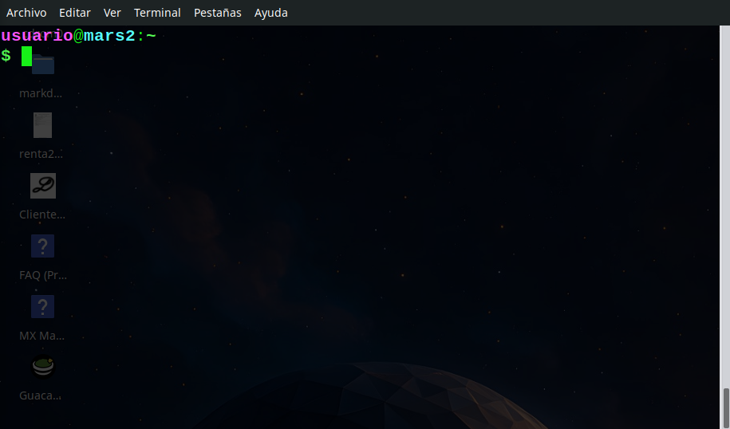
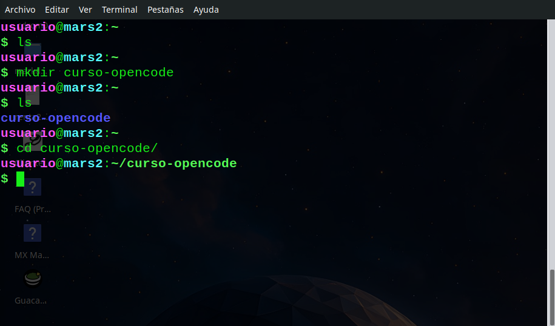
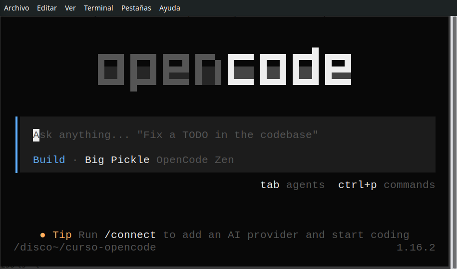

2. Primeros minutos con OpenCode
Objetivo
Instalar OpenCode, abrirlo por primera vez, conocer la interfaz básica y crear tu primer documento usando los modos Plan y Build.
Duración estimada: 30 minutos
Una vez instalado, OpenCode funciona exactamente igual en todos los sistemas. La instalación en Windows requiere un paso adicional porque CMD y PowerShell carecen de las características necesarias para trabajar cómodamente. En macOS y Linux la terminal ya viene preparada.
Existe una interfaz gráfica (GUI) de OpenCode que se instala sin requerimientos previos. Si te dan miedo los siguientes pasos o no sabes si te vale la pena hacerlos, puedes instalarla desde https://opencode.ai/downloads eligiendo la versión Desktop.
Sobre esta interfaz no hablaremos en el resto del curso, pero es equivalente a la propuesta a continuación.
Si te gusta OpenCode, ve por el buen camino y sigue la instalación como se muestra a continuación.
Instalación en Windows
El método para usar OpenCode en Windows es a través de WSL2 (Windows Subsystem for Linux). WSL2 te permite ejecutar un entorno Linux dentro de Windows de forma fluida.
1. Instalar WSL2
Abre PowerShell como administrador y ejecuta:
wsl --installEsto instala WSL2 con una distribución Ubuntu por defecto. Una vez terminado, reinicia el equipo si se te pide.
Si quieres más detalles, Microsoft tiene una guía oficial de instalación de WSL.
2. Abrir WSL y actualizar paquetes
Abre “Ubuntu” desde el menú de inicio. Se abrirá una terminal Linux. La primera vez te pedirá crear un usuario y contraseña.

Dentro de WSL, actualiza los paquetes:
sudo apt update && sudo apt upgrade -y3. Instalar OpenCode
Ejecuta el instalador oficial:
curl -fsSL https://opencode.ai/install | bashAl terminar, cierra y vuelve a abrir la terminal WSL, o ejecuta:
source ~/.bashrc4. Verificar la instalación
opencode --versionDeberías ver un número de versión. Si es así, OpenCode está listo.
Otros sistemas
En macOS y Linux la terminal ya viene preparada, así que la instalación es directa:
| Sistema | Comando |
|---|---|
| macOS | brew install anomalyco/tap/opencode |
| Linux | curl -fsSL https://opencode.ai/install \| bash |
Para más detalles, visita la documentación oficial de instalación.
Conocer la interfaz (TUI)
Una vez preparado el directorio del proyecto, tal como se ha descrito desde la terminal, navega hasta el directorio donde quieras trabajar y ejecuta:

opencodeFíjate que el sistema te indica que directorio está activo, ante la duda usa pwd.
En sesiones posteriores debes añadir -c para continuar la sesión.
opencode -cOpenCode toma como proyecto el directorio desde donde lo ejecutas. Todo el historial de conversaciones, la configuración y los archivos que crees se organizan dentro de ese directorio. Por eso es clave navegar primero con cd antes de escribir opencode.
opencode web
Si prefieres una interfaz gráfica en el navegador, ejecuta:
opencode webSe abrirá OpenCode en tu navegador, apuntando al mismo proyecto. Pero en este curso usaremos la versión de terminal (opencode a secas): es la misma que usarás en entornos profesionales y te obliga a familiarizarte con la terminal, el explorador de archivos y los comandos básicos.
OpenCode funciona con un modelo de inteligencia artificial. Piensa en el modelo como el “cerebro” que procesa tus instrucciones. Hay modelos gratuitos (como el que usa OpenCode por defecto) y modelos de pago con más capacidad.
En este curso usaremos el modelo gratuito incluido. Si necesitas más potencia en el futuro, puedes configurar otros modelos en la configuración de OpenCode.
Verás una pantalla dividida en dos áreas:

- Área superior: respuestas y acciones del asistente
- Área inferior (chat): donde tú escribes los mensajes
- Esquina inferior derecha: indicador del modo activo (Build o Plan)
Pulsa para alternar entre los dos modos. Observa cómo cambia el indicador.
Escribe /help para ver los comandos disponibles.
Entrar, salir y continuar una sesión
- Entrar:
opencodedesde la terminal, siempre dentro del directorio de tu proyecto. Si entras desde otra ubicación, OpenCode tratará ese directorio como un proyecto distinto y no verás el historial de conversaciones anteriores. - Salir: escribe
/exito pulsa Ctrl+C - Sesiones: OpenCode guarda el historial de cada conversación dentro de tu proyecto (en el directorio
.opencode/). Por eso es importante abrirlo siempre desde el mismo directorio: así puedes retomar conversaciones anteriores y mantener toda la configuración del proyecto. - Ritual recomendado: cada vez que quieras trabajar, abre la terminal, navega a tu proyecto con
cdy ejecutaopencode.
Para este curso trabajaremos siempre en el mismo directorio del proyecto.
Manos a la obra
Vas a crear tu primer documento usando los dos modos de OpenCode: primero Plan para diseñar el contenido, luego Build para generar el archivo.
Antes de empezar, confirma que abriste OpenCode desde el directorio curso-opencode que creaste en el paso anterior. Para comprobarlo, escribe en el chat:
!pwd
Debería mostrar algo como /home/tu-usuario/curso-opencode. Si no es así, sal con /exit, navega al directorio correcto y vuelve a ejecutar opencode.
Mira la esquina inferior derecha de la pantalla. Allí pone Build o Plan. Usa para cambiar. Asegúrate de estar en el modo correcto antes de cada ejercicio.
Ejercicio 1 — Plan mode
Modo: Plan — pulsa Tab para estar en modo Plan
Escribe en el chat de OpenCode:
Soy profesor de secundaria. Necesito crear un documento que explique los fundamentos de la teoría de la evolución de Darwin para estudiantes de 14-15 años. Hazme un plan con los apartados que debería incluir y qué contenido pondrías en cada uno.
OpenCode te responderá con una estructura de apartados. Puedes pedirle cambios si quieres, por ejemplo:
Añade un apartado sobre ejemplos cotidianos de la evolución.
Ejercicio 2 — Build mode
Modo: Build — pulsa Tab para estar en modo Build
Escribe ahora en el chat:
Perfecto. Ahora genera el documento completo en un archivo llamado darwin-evolucion.md. Lenguaje sencillo, tono divulgativo, ejemplos claros. Quiero que esté listo para imprimirlo y dárselo a la clase.
OpenCode creará el archivo en tu directorio de trabajo. Puedes comprobarlo de dos formas:
Fuera de OpenCode — abre otra terminal y escribe:
cat darwin-evolucion.mdSin salir de OpenCode — escribe en el chat:
!cat darwin-evolucion.md
El signo ! le dice a OpenCode que ejecute ese comando en la terminal sin cerrar la sesión. Útil para comprobaciones rápidas.
Ejercicio 3 — Añadir un cuestionario
Sin cerrar la sesión, escribe en el chat:
Ahora añade al final del archivo un cuestionario de 5 preguntas tipo test sobre el contenido. Cada pregunta con 4 opciones. Incluye las respuestas correctas al final del todo.
OpenCode editará el archivo existente para añadir el cuestionario, sin tener que empezar de cero.
Ejercicio 4 — Convertir a Word (opcional)
¿Tienes Word y quieres un .docx? Pídeselo a OpenCode:
Convierte darwin-evolucion.md a un archivo .docx usando python-docx.
OpenCode necesita la librería python-docx. La primera vez que la uses, la instalará automáticamente.
OpenCode trabaja de forma nativa con Markdown (.md): es texto plano, ligero, y herramientas como Quarto lo convierten a HTML, PDF o Word. Al usar .md evitas formatos binarios (.docx) que OpenCode puede leer y modificar pero cuesta tiempo y tokens, importante cuando uses modelos de pago.
Si ya conoces Git, el Markdown se versiona de forma natural: al ser texto plano, los cambios entre versiones se ven limpios y es fácil colaborar con otras personas.
No olvides añadir los cambios y hacer commit después de salir de la sesión.
Para visualizar el material generado, suele ser más rápido convertir el .md a HTML que a .docx. HTML se abre al instante en cualquier navegador, no requiere Word, y respeta fielmente el formato. Con Quarto es tan sencillo como quarto render archivo.md.
Resumen del paso
- ✅ OpenCode instalado y funcionando
- ✅ Conoces la interfaz: chat, modos, comandos básicos
- ✅ Sabes entrar, salir y cambiar entre Plan y Build
- ✅ Entiendes que OpenCode usa el directorio actual como proyecto y por qué es importante abrirlo siempre desde el mismo directorio
- ✅ Has creado un documento completo con Plan + Build
- ✅ Has ampliado el documento con un cuestionario
- ✅ Entiendes por qué Markdown es el formato ideal con OpenCode
En el próximo paso profundizaremos en la interfaz y en cómo referenciar archivos con @.
Curso OpenCode 101 · Idea original de JA Palazón · Mayo 2026